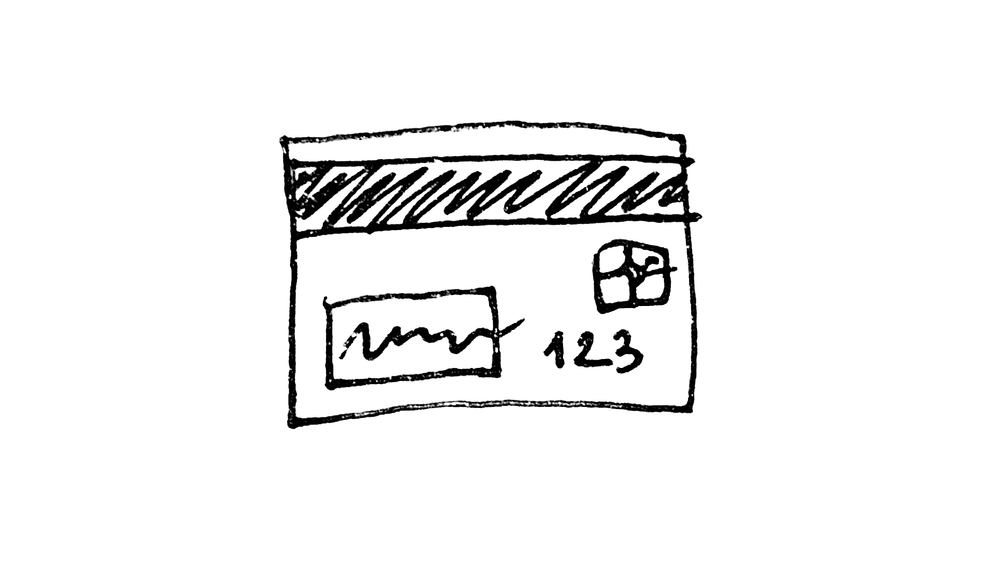

Банки Перу и как открыть банковскую карту без ВНЖ и с ВНЖ
Вот ты приезжаешь в Перу и понимаешь, что не работают ни Visa, ни Mastercard, выпущенные в России. У тебя есть пара тысяч долларов наличных на первое время, но нужно решать что-то с поступлениями.
Именно в такой ситуации был и я, и подробно рассказал про это в статье про мои первые пару месяцев в Перу. В тот момент меня спасла крипта, ведь в Лиме очень легко обналичить её с низким процентом. В Куско с криптой посложнее, но выжить можно.
Допустим, ты решил этот вопрос, но осталась проблема с отсутствием банковской карты. Как вызвать Убер? Там принимают наличку, но всего несколько раз, и потом требуют карту. Да и хочется продлить уже Spotify и Netflix и наслаждаться привычными сервисами.
Ты заходишь в отделение какого-то банка, но тебе говорят, что не откроют счёт, если у тебя нет Carné Extranjeriá (карнэ́ экстранхери́я, карточка иностранца, она же ВНЖ). И как быть?
Не переживай, ты сможешь открыть карту без ВНЖ, более чем легально. Но для начала давай разберёмся какие банки есть в Перу.
🏛️ Банки Перу #
1️⃣ BCP (Banco de Crédito de Perú). Самый крупный банк. Но коллеги рассказали что пару лет назад его хакнули и советовали не связываться. Но я не послушал и попробовал связаться - и мне очень не понравился днищенский сервис в их офисах. И я прям чувствовал предвзятое отношение к себе как к иностранцу, было очень не приятно. Так что можно сказать не пользовался им, хотя карта вроде где-то валяется. В довесок к днищенскому сервису здесь самые крупные комиссии за переводы.
2️⃣ BBVA (Banco Continental). Второй по размеру, но лучший по мнению всех с кем общался. Сам пользуюсь им уже более двух лет. Приложение норм, сервис хороший, комиссии очень низкие (меньше процента за переводы в другие банки).
Есть нюансы типа того, что операции не сразу отображаются в приложении (иногда до 3 дней их не видно). Операции показывает только за последние 2 месяца и если хочешь больше - нужно заказывать выписку. Бесят плашки с рекламой в приложении, но так скорее всего у всех. Веб версия есть, но операции через неё не проведёшь - только через приложение на телефоне.
3️⃣ Interbank. Во всяких рейтингах в интернете фигурирует на первых местах. Однако, не сталкивался и рассказать нечего. Слышал, что здесь тоже очень выгодные комиссии за переводы в другие банки. В момент написания этой статьи так совпало, что этот банк взломали. Люди пишут, что нельзя залогиниться в онлайн банк и приложения, для этого нужно лично придти в отделение банка. Из-за этого во все отделения большие очереди.
Ещё натыкался на информацию, что в банкоматах Интербанка работает карта Union Pay от Газпромбанка и можно снять деньги с нормальной комиссией.
Дальше идут банки второго эшелона, всякие Scotiabank, Pichincha, BanBif.
Также существуют муниципальные банки: Caja Cusco, Caja Arequipa.
Так же упомяну "банк" Banco Falabella. Falabella - это крупная торговая сеть, и они рекламируют свою кредитную карту, предоставляя хорошие скидки в своих магазинах при покупке с помощью неё. Не пользовался, сказать нечего. Не воспринимаю их серьёзно, как в РФ не воспринимал бы серьёзно карту "банка" М-Видео или Эльдорадо. Но может кому-то откроют карту без ВНЖ?
Ну и напоследок - Banco de la Nacion. Это что-то вроде Центрального Банка. Все пошлины за любые государственные сервисы вы будете оплачивать либо в офисах этого банка, либо перечислять в этот банк через сервис Pagalo.pe. В нём тоже можно выпустить дебетовую или кредитную карту, и вроде как в чатах писали, что норм.
Есть и другие банки, но они более мелкие и их офисов я просто не видел.
😎 Завести банковскую карту в Перу с ВНЖ #
Если у тебя есть ВНЖ перу (оно же carné extranjería или просто карне́шка), то рассказывать особо не о чем.
Просто идёшь в любой понравившийся банк и оформляешь себе карту. Хоть кредитную, хоть дебетовую. Хоть в солях, хоть в долларах.
Также часто требуют квитанцию за коммуналку с места проживания, чтобы подтвердить адрес. В принципе в любом отеле дают без проблем.
💳 Завести банковскую карту в Перу без ВНЖ #
Если ВНЖ у тебя нет, то тут ситуация посложнее. В большинстве отделений большинства банков тебе откажут в оформлении карты и потребуют карнешку.
Однако, по закону в Перу нет никаких ограничений в выдаче карт иностранцам без ВНЖ - есть лишь собственные представления банков об этом и их сотрудники-перестраховщики, действующие строго по инструкциии и в любой непонятной ситуации заявляющие, что у них лапки. Раньше ещё иногда прикрывались санкциями против русских, причём знаю о случае, когда украинцу тоже отказали из-за этого. Цирк.
Полно историй, как в одном и том же банке одному отказали, а другому сделали карту. И чаще всего вопрос в том, в какой именно офис ты зайдёшь. В каких-то случаях лучше зайти в филиал поменьше, других - лучше идти в центральный офис. А ещё может нужно правильно улыбаться, в Перу это работает.
Есть только полторы подтверждённых истории с получением банковской карты без ВНЖ от людей, с которыми я общался лично. В обоих случаях в личном кабинете в миграсионес делалось Permiso Para Firmar Contrato (разрешение подписывать договоры) и с ним приходили в определённый офис определённого банка и без проблем открывали счёт.
Первый случай - банк Pichincha в Лиме, в центральном офисе (в других офисах отказывали). Так же этому же человеку подтвердили в центральном офисе Scotiabank, что с такой бумажкой ему всё откроют, особенно если это будет долларовый счёт.
Во втором случае это был Interbank на Пардо. Однако, этот случай не самый показательный, т.к. у человека был CPP (Permiso temporal de permanencia, разрешение на временное пребывание). Этому же человеку открыли счёт в Scotiabank, но потом заблокировали 🤷♂️
Ещё многие писали, что в банке Pichincha в Куско им тоже удалось получить карту без ВНЖ. Насколько я понимаю, офис Пичинчи в Куско только один и вроде как находится здесь.
На всякий случай вот инструкция как сделать это самое Permiso Para Firmar Contrato с официального сайта правительства Перу. Но там сложного вообще ничего. Заходишь в личный кабинет Миграсионес, и либо глазками находишь этот пункт, либо на странице Inicio в поиск вбиваешь. Дальше пара кликов и документ готов. Если я правильно помню, пару лет назад я платил за него пошлину что-то вроде 20 солей (~$6), но в данный момент в официальной инструкции упоминания пошлины нет. Так что думаю это бесплатно. Делается реально за 5 минут, из которых дольше всего ты вбиваешь данные чтобы залогиниться в Миграсионес.
 Inicio ➔ permiso ➔ Para firmar contratos
Inicio ➔ permiso ➔ Para firmar contratos
Любопытно, что в своё время я делал именно такую бумажку и заходил с ней в офисы BCP и BBVA возле Парка Кеннеди в Мирафлорес - и меня послали лесом.
Если у вас был положительный опыт открытия счёта без ВНЖ в других банках Перу - пожалуйста, отпишитесь в комментариях. Добавлю эту информацию в статью.
🇨🇴 Бонус: как сделать банковскую карту без ВНЖ в Колумбии #
Человек, рассказавший мне о своём опыте с банком Pichincha также рассказал, что у него пару лет назад был опыт открытия карты в Колумбии без ВНЖ. Обошёл 10+ банков, и только в BBVA открыли вообще без вопросов и без проблем. Но по его мнению там банки редкостное говно, дно по сравнению с российскими.
💸 Платежи в Перу: карты, нал, Yape, Plin #
Тех, кто ещё не в Перу, а только планирует поехать сюда, наверное интересует как здесь с платежами.
Принцип простой: чем более туристическое и развитое место, тем больше шансов что примут оплату картой. В Лиме - это районы Мирафлорес, Сан Исидро и Барранко. В других районах тоже много где принимают, но выше шанс встретить какой-то местный микрорынок, где карту не примут.
Наличные принимают вообще везде, от мелкого пыльного рынка до современного гипермаркета.
Также есть такие штуки как Yape и Plin. Это что-то вроде СБП (системы быстрых платежей) первый от банка BCP, второй от BBVA. Не знаю как в других приложениях, но в приложении BBVA есть пункт Plin, через который можно отправить деньги как через Plin, так и через Yape. Либо сканируешь QR-код, либо выбираешь номер телефона из списка контактов, либо вручную вбиваешь номер телефона, сверяешь имя, вводишь сумму и переводишь. Показываешь экран телефона с успешной операцией продавцу - и всё.
Йапе и Плин очень часто работают как заменитель наличных. Их принимают практически все, от таксистов до продавцов. Единственное, не пробовал заплатить так в каком-нибудь супермаркете типа Plazavea. Как-нибудь попробую и обновлю этот абзац.
Но важный нюанс: чтобы у вас работал Yape или Plin, вам нужен счёт в банке Перу. Деньги отправляются оттуда и приходят туда, а не на счёт сотового оператора. Честно говоря, не знаю как с ними работают другие банки, есть опыт только с BBVA. Но знаю что в приложении Интербанка есть этот пункт, но человек об этом рассказавший ни разу им не пользовался, т.к. его типа надо разблокировать.
Когда я слышу про разблокировку чего-то в приложении банка, скорее всего речь идёт о т.н. Token Digital. У меня в приложении BBVA Плин не работал пока я не оформил этот самый токен дихиталь. Причём на старом телефоне я его не мог сделать, выдавал ошибку. Много раз был в разных отделениях BBVA по этому вопросу, и везде приходилось ждать полчаса, пока оператор с кем-то созванивался и переписывался, потом говорил, что в течение суток подключат, и в итоге ничего не подключали. Помогло только когда купил новый телефон - подключил то ли прям в приложении, то ли отсканировав QR в банкомате BBVA.
💱 Про обмен валюты #
Если ты выпустил солевую карту в одном из банков Перу - не спеши оплачивать ей Netflix или другие сервисы, принимающие платежи в долларах. Дело в том, что в таком случае банк будет конвертировать валюту с крайне невыгодным курсом. Я как-то специально проверил в BBVA, и при официальном курсе в 3.72 валюта обменялась с курсом что-то около 4.5. Грабёж!
Лучше помимо солевого счёта и карты также завести отдельно долларовый счёт и отдельную карту к нему. И уже её использовать для платежей в долларах. Для обмена валюты в приложении BBVA есть пункт T-Cambio, и там курс сильно получше чем 4.5. При официальном курсе в 3.72 там меняю примерно по курсу 3.82. Не идеал, но если нужно по-быстрому долларов 10 обменять - сойдёт.
Но ещё выгоднее менять наличную валюту. Лучше всего менять в специализированных обменниках. Отличить такие просто - обычно там пишут что-то типа Cambio и вывешивают курсы доллара и евро. Изредка бывают и с электронными табло. В таких обменниках хороший курс (обычно плюс-минус такой же как официальный). Но главное - вас не обманут и не выдадут вам фальшивых купюр, особенно если у них стоит специальная счётная машинка. Вы возможно замечали на купюрах печати: это печати как раз таких обменников, они обязаны проверять каждую купюру и ставят на неё свою печать, и отвечают за эту проверку головой.
Чего не скажешь про уличных менял, которые обычно тусуются неподалёку от нормальных обменников и у офисов банков. У них вроде бы курс получше, но я слышал истории, что такие менялы выдавали людям фальшивые купюры.
Ну и где точно не нужно менять валюту - так это в аэропорту. Я не помню точно какой курс в обменнике в аэропорту Лимы, но уверен, что он сильно хуже курса в обменнике где-нибудь возле Парка Кеннеди в Лиме.
💰 Заключение #
Вроде бы рассказал про все моменты, которые могут быть интересны вновьприбывшим в Перу.
За кадром остались вопросы кредитов и ипотеки, но это сильно другая тема и может быть когда-нибудь расскажу об этом отдельно.
Если у вас остались ещё вопросы или у вас есть какой-то опыт, касающийся банков и карт, которым хотели бы поделиться - добро пожаловать в комментарии!